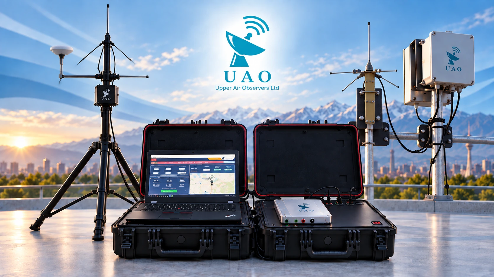

01
ابزار پروازی
رادیوسوند دیجی سوند
دیجی سوند، رادیوسوند بالنبر برای اندازهگیری PTU و GNSS و تشکیل پروفایل عمودی جو است.
ورود به صفحه ←سامانههای پایش جو بالا
سامانهای یکپارچه برای پایش جو بالا شامل رادیوسوند دیجی سوند، سختافزار دریافت میدانی و نرمافزار ایستگاه زمینی دیجیمون.
یک زنجیره کامل پایش
دیجی سوند پارامترهای جوی را در ارتفاع اندازهگیری و دادهها را از طریق رادیو ارسال میکند. ایستگاه زمینی سیگنال را دریافت میکند و نرم افزار دیجیمون فرآیند عملیاتی مقایسه پروفایلها و تولید کد TEMP را پشتیبانی میکند.
ابزار پروازی
دیجی سوند، رادیوسوند بالنبر برای اندازهگیری PTU و GNSS و تشکیل پروفایل عمودی جو است.
ورود به صفحه ←
سختافزار میدانی
آنتنهای دریافت، تجهیزات ایستگاه و سختافزار قابل حمل برای دریافت بلادرنگ داده های رادیوسوند.
ورود به صفحه ←
عملیات و داده
کنترل صعود، گراند چک، تولید TEMP و مقایسه صعودها و پروفایلها در یک رابط عملیاتی.
ورود به صفحه ←جریان اندازهگیری
حوزههای کاربرد
هواشناسی، حملونقل و انرژی حوزههای کاربردی این سامانه هستند که دادههای هواشناسی توسط سازمان هواشناسی، فرودگاهها و خطوط هوایی، مجموعههای حملونقل و فعالان انرژیهای تجدیدپذیر مورد استفاده قرار می گیرند.
مشاهدات عمودی جو برای تحلیل عملیاتی و فرآیندهای پیشبینی.
اطلاعات جو بالا برای هوانوردی و سایر عملیات حملونقل وابسته به شرایط جوی.
مشاهدات جوی برای فعالیتهای انرژی و انرژیهای تجدیدپذیر حساس به هوا.
مستندات
اسناد زیر کاتالوگهای ارائهشده پایشگران جو بالا هستند و بهعنوان منبع فنی این معرفی محصول استفاده شدهاند.
پایشگران جو بالا
برای رادیوسوند دیجی سوند، سختافزار ایستگاه زمینی، نرمافزار دیجیمون یا همکاری فنی با پایشگران جو بالا تماس بگیرید.